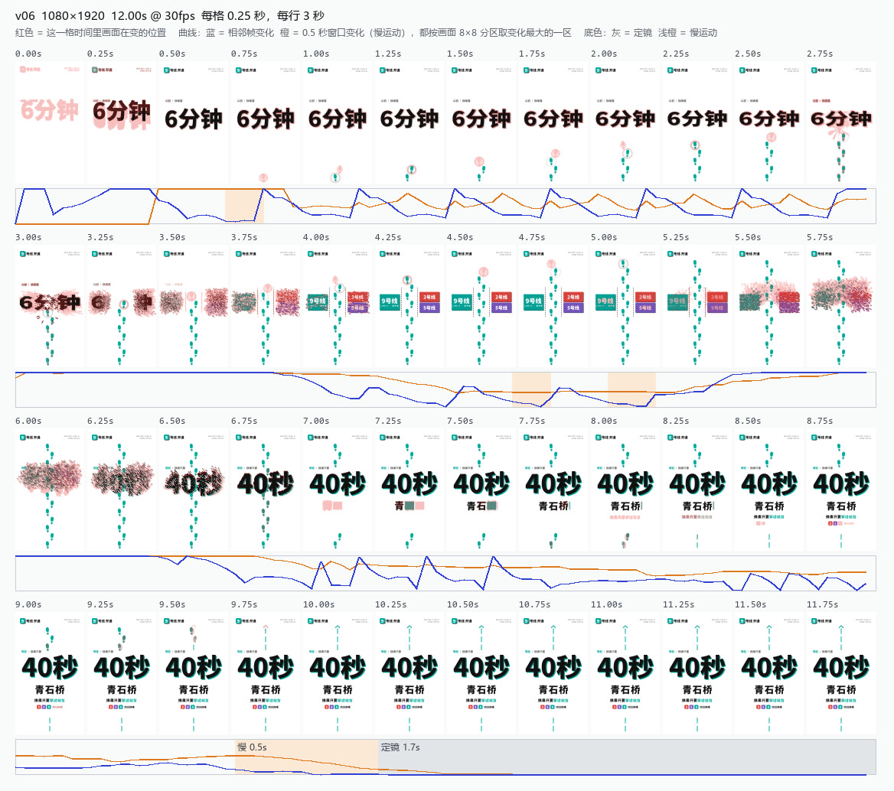
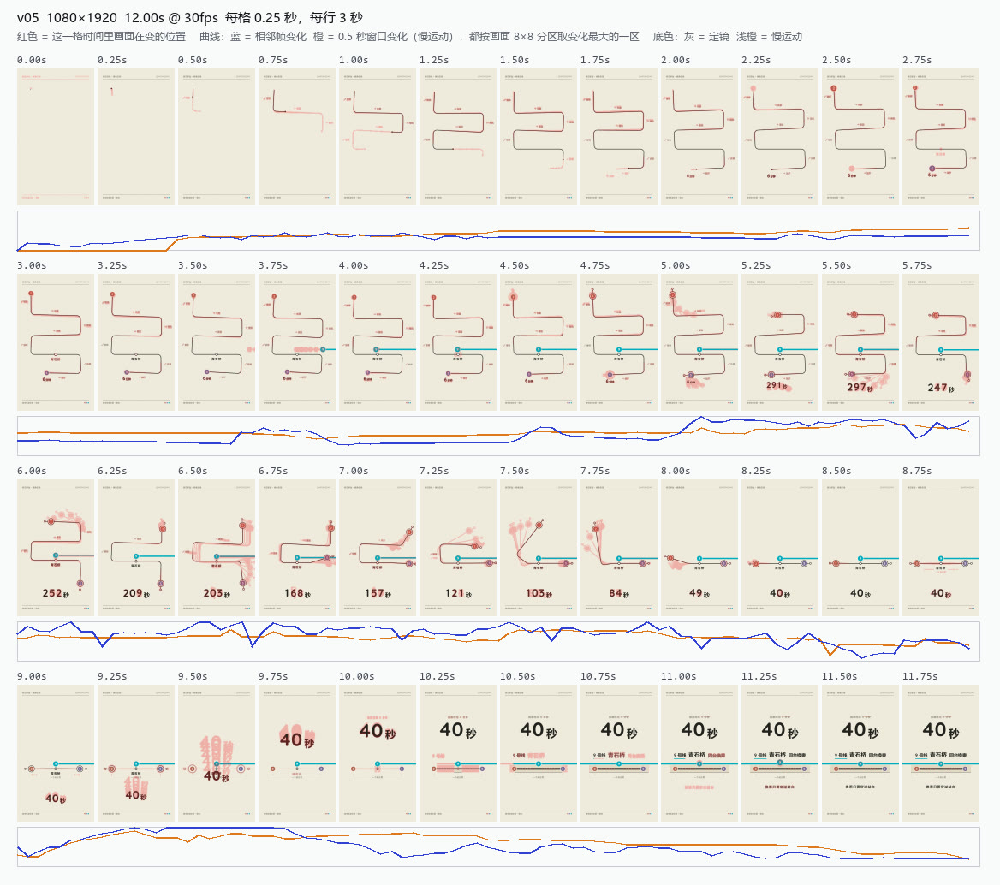
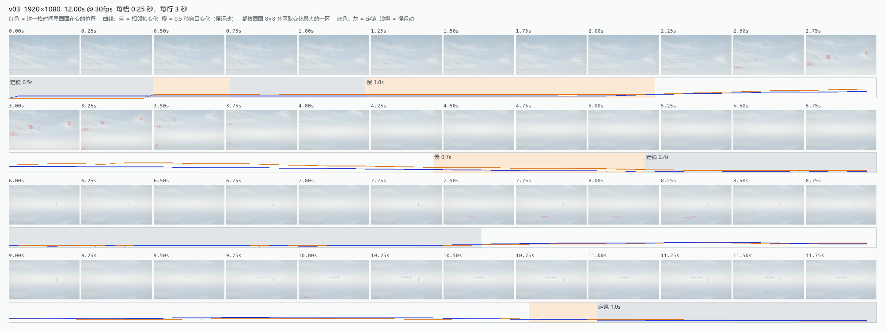

管线里做判断的 agent 只拿到静帧和条带，一个停顿不管多长都只出一帧，时间在构造上就丢了。这份计划给每支片做一份"时间总览"，然后验证：有了它，评审对时间的判断是不是更接近看视频的人。
从已经渲好的 video.mp4 用一个脚本算出来，结果确定、可复现，不用额外渲染。
在本轮的片子上直接出的图，阈值还没调。看 v06："6分钟"从 0.5 秒停到约 2.9 秒，粒子散开约 3 秒，"40秒"从 7.0 秒起一直停到结尾；运动中途的那几格夹在前后完整的字形之间，一看就知道是过程，不是缺陷。

v06（D L2-4，你评 5/5，"粒子碎裂重组效果惊艳"）。描述员只看静帧和条带时，把这段判成"粒子盖住字"。

v05（D L1-1）：绕行线一路被拉直，倒计时一直在走，整支片没有一段真正的定镜。

v03（F S1，5/5）：画面淡、变化慢，原来的逐帧阈值把它整支量成零；新曲线和热区能看出云在移动、人物入画、涟漪扩开。"定镜 / 慢运动"的分段还在跳，要靠调参解决。
"现行" = 静帧 + 条带；"加总览" = 再加纯像素版时间总览。每个案例用独立的无头评审：只开 Read，提示词固定，顺序随机。
原片上的误报不多于现行条件
加总览的条件，缺陷版上
这两处都在 r1 上起作用；然后是甲和节奏刀
没通过，就看是哪一层没起作用，只改那一层再测一次。成本：约 110 次评审调用，按本轮每次约 $0.53 算约 $60；不跑 builder，不需要你打分。
同一个评审，"现行"对"加总览"两种材料，门槛按上面。
推荐：按这个做。
不再沿用"评审先自己看完图，再给测量"那条借来的规则。
推荐：一起给，因为它本身就是看片材料，不是事后补上的测量。
评审调用约 $60。
推荐：接受。